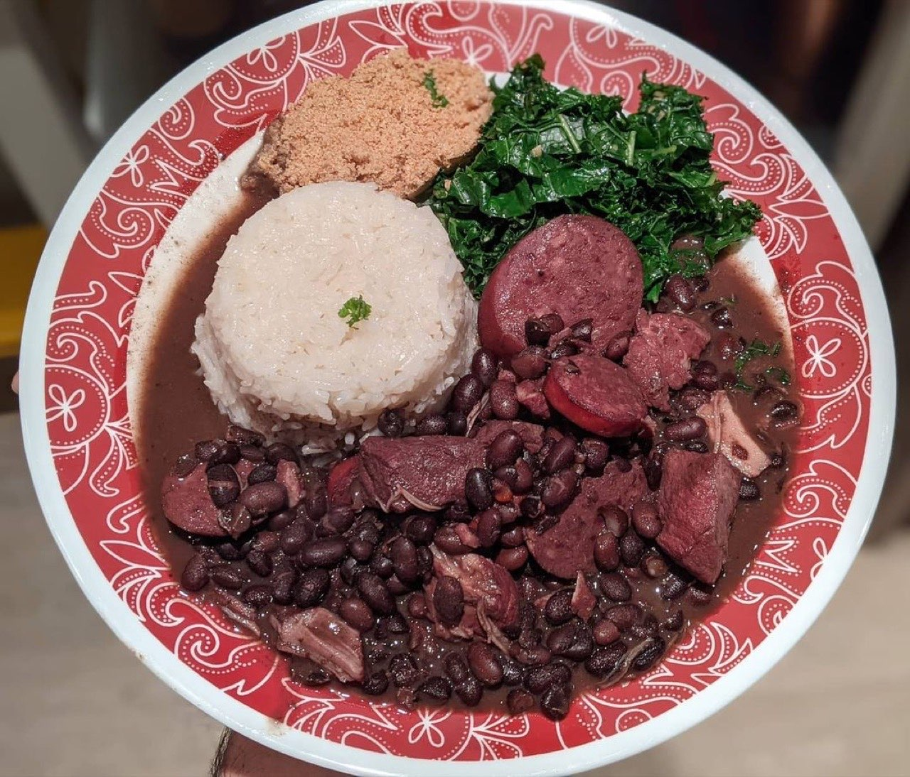
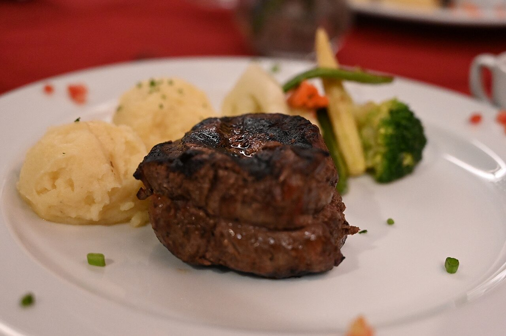

Restaurant · Urgezes
Restaurante Transmontano
A café-restaurant that feels like home
Restaurante Transmontano is a café-restaurant on Avenida Dom João IV, in Urgezes, Guimarães. Come and try typical Portuguese food in a welcoming setting.
Typical food
Portuguese cooking in a welcoming setting.
Café-restaurant
A coffee to start the day or a relaxed meal.
Order from your table
By QR code, no waiting for staff.



Illustrative photos · the final site uses your own.
QR code ordering
Guests order from the table. The order goes straight to the kitchen.
- Scan the table codeWith the phone camera, nothing to install.
- Choose and orderThe menu shows prices; guests add dishes and leave notes.
- The kitchen gets it instantlyThe order appears on the counter screen with the table number.
Point your camera and order here
Booking request
Book your table
Pick the day and time. The request arrives by WhatsApp and we confirm right away.
This is how the message would reach your WhatsApp. Nothing is sent in this demo.
Visit
Where to find us
Av. Dom João IV 72, 4810-534 GuimarãesOpening hours
Opening hours to be confirmed
Proposal for Restaurante Transmontano
Like it? This could be your website.
This page was made especially for your business by João Machado, a web developer here in Guimarães. It includes:
- Fast mobile page with your name and identity
- Digital menu with QR code and orders placed from the table
- Menu and prices that are easy to update
- Buttons to call, send a WhatsApp and get directions
- Booking or order requests straight to WhatsApp
- Your own domain (e.g. transmontano.pt) linked to Google Maps
I take care of hosting and maintenance. No commitment.